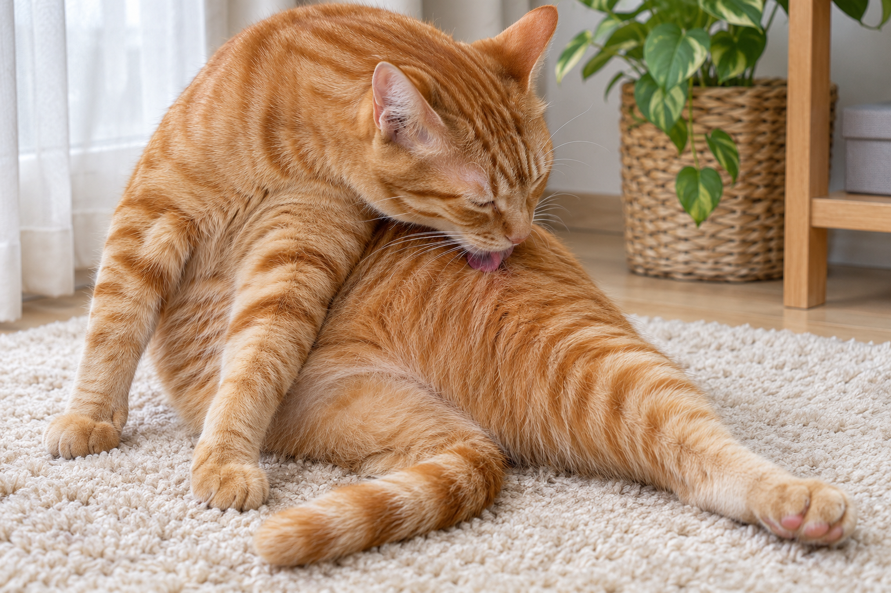

日常習慣
舔毛理毛
用舌頭一下一下梳理自己的毛。

觀察描述
貓咪轉頭，伸出舌頭舔過側腹或其他搆得到的部位，接著收回舌頭再舔。
情境與可能原因
貓咪坐在熟悉的地方，輪流舔拭身體不同部位
舔毛是貓咪日常整理被毛的一部分。
注意事項
留意是否反覆舔同一處。若舔毛明顯增加，或出現掉毛、禿斑或皮膚破損，請諮詢獸醫。
日常習慣
用舌頭一下一下梳理自己的毛。

貓咪轉頭，伸出舌頭舔過側腹或其他搆得到的部位，接著收回舌頭再舔。
貓咪坐在熟悉的地方，輪流舔拭身體不同部位
舔毛是貓咪日常整理被毛的一部分。
留意是否反覆舔同一處。若舔毛明顯增加，或出現掉毛、禿斑或皮膚破損，請諮詢獸醫。